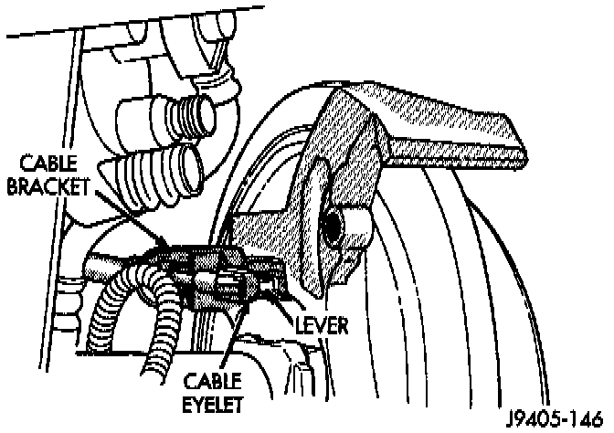

Rear Cable Replacement
REMOVAL1. Raise vehicle and loosen adjusting nut at equalizer to provide slack in rear cables.
2. Disengage cable at equalizer. Then disengage cable from body and chassis clips and retainers.

3. Slide cable eyelet off actuating lever.
4. Compress retainer securing cable in bracket attached to caliper bracket. Then remove cable from bracket.
INSTALLATION
1. Install cable eyelet on lever. Be sure eyelet is seated in lever notch.
2. Seat cable retainer in caliper bracket.
3. Route cable up to cable tensioner and equalizer. Then connect cable to equalizer.
4. Check cable routing. Be sure cable is secured in body and chassis clips and retainers. Also be sure cable is not twisted, kinked or touching any rotating components.
5. Adjust parking brake. Adjustments